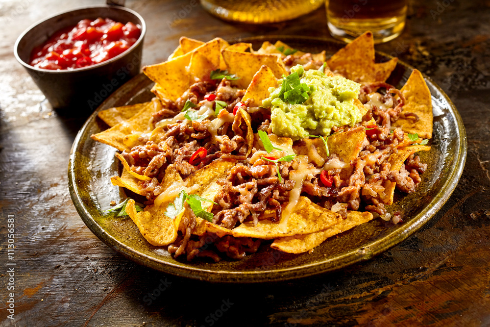

BitCook
Cocina con nosotros
☼
Celebramos el arte de comer con
alegría y sabor
Nuestras recetas
Burritos
Tiempo: 15 minutos
Ingredientes: Huevos, tocino o salchicha, tortillas de harina.
Instrucciones: Cocinar y mezclar ingredientes, rellenar tortillas y enrollar.
cochinitas
Tiempo de preparación: 4 horas
Ingredientes: Puerco (pierna o lomo), achiote
Instrucciones: Mezclar la carne con achiote y otros condimentos,
enchiladas
Tiempo de preparación: 30 minutos
Ingredientes: Pollo cocido desmenuzado, tortillas de maíz
Istrucciones: Rellenar las tortillas con pollo,

Nachos
Tiempo de preparación: 15 minutos
Ingredientes: Nachos de maíz, queso rallado,
Instrucciones: Coloca los nachos en una bandeja para hornear,
Sopa Pozole
Tiempo de preparación: 3 horas
Porciones: 6-8
500 g de carne de cerdo (pierna o carne de cerdo para pozole), cortada en trozos
Tacos
Tiempo de preparación: 30 minutos
Porciones: 4
500 g de carne para asar